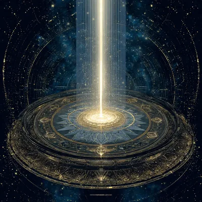
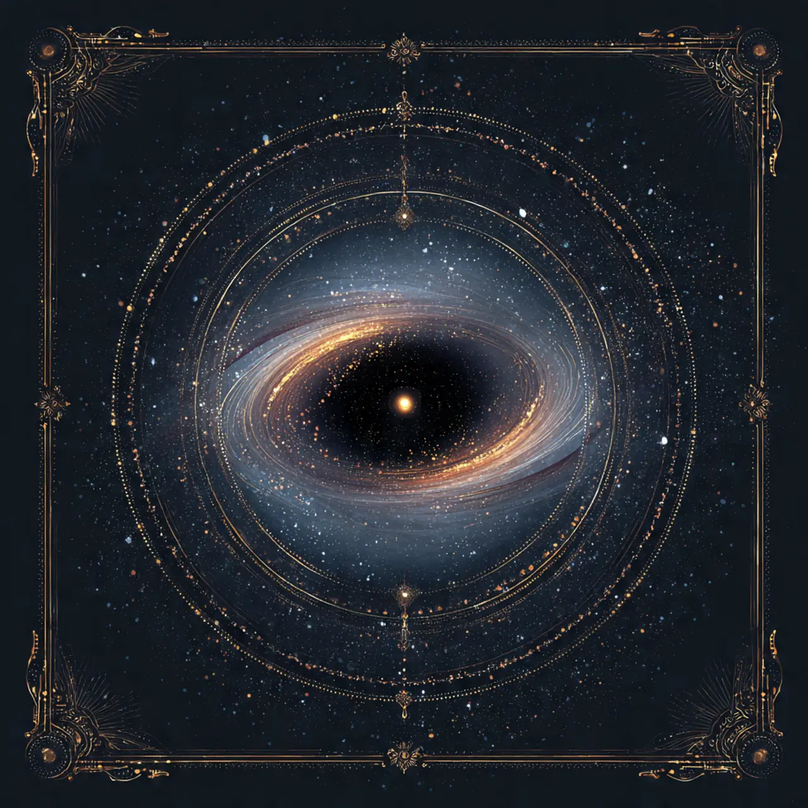

Astrologia Avanzata:
Carta Natale, Sinastria, Oraria e Karmica
Oltre il segno solare. I quattro strumenti dell'astrologia profonda per leggere il destino, la relazione di coppia, rispondere a domande precise e scoprire la tua missione karmica.
La Carta Natale

Dharma
KarmaLa carta natale — chiamata anche tema natale o oroscopo natale — è una fotografia del cielo nel momento esatto in cui sei venuto al mondo. Non solo il giorno, ma l'ora e il luogo di nascita determinano una mappa unica e irripetibile: la tua firma cosmica.
Mentre l'oroscopo del giorno guarda dove si trovano i pianeti oggi, la carta natale mostra dove si trovavano nel momento in cui hai respirato per la prima volta. È il punto di partenza di tutta l'astrologia individuale: senza il tema natale, ogni altra tecnica perde metà del suo significato.
Le tre colonne del tema natale
Le 12 Case Astrologiche
La carta natale è divisa in 12 spicchi chiamati case. Ogni casa governa un settore preciso dell'esistenza. La posizione dei pianeti al loro interno rivela dove e come si manifesta quella loro energia nella tua vita concreta.
Gli Aspetti tra Pianeti
Gli aspetti sono gli angoli che si formano tra i pianeti nella carta natale. Determinano se le energie planetarie lavorano in armonia o in tensione tra loro.
| Aspetto | Simbolo | Gradi | Significato |
|---|---|---|---|
| Congiunzione | ☌ | 0° | Fusione di energie. Intenso e potente, può essere armonico o conflittuale a seconda dei pianeti coinvolti. |
| Sestile | ⚹ | 60° | Armonia e opportunità. Le due energie collaborano facilmente, creando talenti naturali spesso dati per scontati. |
| Quadratura | □ | 90° | Tensione e sfida. I pianeti si ostacolano, generando conflitti interni e spinte evolutive. |
| Trigono | △ | 120° | Fluidità e grazia. L'aspetto più armonico: le energie si potenziano naturalmente senza sforzo. |
| Opposizione | ☍ | 180° | Polarità e bilanciamento. Le energie si scontrano ma si cercano — spesso proiettate sulle relazioni. |
Per interpretare la carta natale serve data, ora e luogo di nascita precisi. Anche 15 minuti di differenza nell'ora possono cambiare l'ascendente e modificare l'interpretazione delle case.
Astrologia Karmica
L'astrologia karmica legge la carta natale come una mappa dell'anima attraverso le vite. Parte dal presupposto che l'anima si reincarna e che ogni vita porta con sé lezioni irrisolte e risorse accumulate. Nella carta natale, questi pattern si leggono principalmente attraverso i Nodi Lunari e i pianeti retrogradi.
Non è necessario credere letteralmente alla reincarnazione per trovare valore in questa lettura: i nodi lunari descrivono con precisione i pattern psicologici profondi, le zone di comfort e le aree di crescita, indipendentemente dalla loro origine metafisica.
I Nodi Lunari: bussola dell'anima
I Nodi nei 12 Segni
Il segno del Nodo Nord indica la qualità che devi sviluppare; il segno del Nodo Sud (sempre opposto) indica da dove parti. Alcune combinazioni significative:
- Nodo Nord in Ariete / Sud in Bilancia: Imparare l'autonomia e la decisione individuale dopo vite di compromesso e dipendenza dalle relazioni.
- Nodo Nord in Toro / Sud in Scorpione: Costruire stabilità materiale e semplicità dopo vite di intensità, crisi e trasformazione continua.
- Nodo Nord in Gemelli / Sud in Sagittario: Curare il dettaglio e la comunicazione locale dopo vite di grandi visioni e verità universali.
- Nodo Nord in Cancro / Sud in Capricorno: Aprirsi alla vulnerabilità emotiva e alla famiglia dopo vite di carriera, controllo e disciplina.
- Nodo Nord in Leone / Sud in Acquario: Sviluppare l'espressione individuale e il cuore dopo vite di distacco intellettuale e ideali collettivi.
- Nodo Nord in Vergine / Sud in Pesci: Imparare il servizio pratico e il discernimento dopo vite di sacrificio, fuga e dissoluzione dei confini.
I Pianeti Retrogradi nella carta natale
Un pianeta è retrogrado alla nascita (indicato con ℞ nel tema natale) quando appariva muoversi all'indietro visto dalla Terra. In astrologia karmica, un pianeta retrogrado suggerisce che la sua energia è interiorizzata, spesso legata a lezioni irrisolte di vite precedenti.
La casa in cui si trovano i Nodi è altrettanto importante del segno. Il Nodo Nord in Ariete nella Casa X è diverso dal Nodo Nord in Ariete nella Casa I: il primo parla di carriera e leadership pubblica, il secondo di identità personale.
Astrologia Oraria
L'astrologia oraria è una delle forme più antiche e precise di astrologia pratica. Invece di usare il momento della nascita di una persona, usa il momento esatto in cui viene posta una domanda. Quell'istante diventa il "tema natale della domanda" e viene interpretato per ricavare una risposta precisa.
La tradizione dell'oraria risale ai testi arabi del IX-X secolo, in particolare agli scritti di Masha'allah e Al-Qabisi, e fu sistematizzata in occidente da William Lilly nel XVII secolo con il suo trattato Christian Astrology (1647), ancora oggi testo di riferimento.
Come funziona
Aree di domanda tipiche
- Casa X — Lavoro e carriera: "Otterrò questa promozione?" · "Devo accettare questa offerta di lavoro?" · "Quando troverò lavoro?"
- Casa V e VII — Relazioni: "Questa persona mi ama?" · "Il mio matrimonio durerà?" · "Rivedrò la mia ex?"
- Casa IV — Proprietà: "Riuscirò a comprare questa casa?" · "Venderò l'appartamento entro l'anno?"
- Casa VI — Salute: "Guarirò da questa malattia?" · "È una diagnosi corretta?" · "Quando migliorerò?"
- Casa II — Oggetti perduti: "Dove ho messo le chiavi?" · "Ritroverò i miei soldi?" · "Il furto sarà risolto?"
- Casa IX — Viaggi e studi: "Il viaggio andrà bene?" · "Sarò ammesso all'università?" · "Supererò l'esame?"
Regole fondamentali dell'oraria
L'astrologia oraria ha regole precise, alcune delle quali indicano che il tema non è "leggibile":
- Luna nei gradi iniziali o finali: La questione è troppo prematura o già conclusa per dare una risposta affidabile.
- Saturno nella Casa I: Ostacoli alla risposta, o la situazione è più grave di quanto appaia.
- L'Ascendente nei gradi iniziali: È troppo presto per fare previsioni; la situazione cambierà prima di stabilizzarsi.
- Aspetto applicativo tra significatori: Segnale positivo — le energie si stanno avvicinando verso la realizzazione.
- Luna che fa aspetto favorevole al significatore: Ulteriore conferma della risposta affermativa.
A differenza dell'astrologia natale, nell'oraria non serve sapere l'ora di nascita del richiedente. Basta il momento della domanda. Questo la rende accessibile anche a chi non conosce il proprio orario di nascita preciso.
Sinastria di Coppia
La sinastria è la tecnica astrologica per eccellenza quando si vuole capire una relazione. Si sovrappongono i temi natali di due persone e si analizzano gli aspetti che si formano tra i pianeti dell'uno e dell'altra. È completamente diversa dalla semplice compatibilità tra segni solari: due Ariete e Capricorno "incompatibili" secondo l'oroscopo possono avere una sinastria meravigliosa.
La sinastria non dice se una relazione "funzionerà" o no — dice quali sono le dinamiche, le forze attrattive, le aree di tensione e di armonia. Anche le relazioni più difficili possono essere profondamente significative, e anche le più armoniose possono mancare di quella scintilla evolutiva che spinge a crescere.
I pianeti chiave nella sinastria
Aspetti difficili: sfida o karmica?
Non tutti gli aspetti di tensione nella sinastria sono negativi. Molte relazioni intense e trasformative hanno aspetti "difficili" come motore.
- Marte square Marte: Attrito continuo, competizione, possibile aggressività. Ma anche energia e sfida stimolante se gestita.
- Nettuno square Venere: Idealizzazione, proiezioni romantiche, delusione. Relazione che parte come un sogno e può finire in confusione.
- Plutone conjunct Venere o Marte: L'aspetto più intenso e trasformativo. Ossessione, gelosia, potere, ma anche rinascita profonda. Impossibile da ignorare.
- Saturno square Sole o Luna: Sensazione di limitazione, critica, peso. Ma se gestito, porta struttura e impegno reale nella relazione.
- Nodi Lunari su pianeti natali: Segnale di incontro karmico. Queste persone si conoscono da prima. La relazione ha un senso che va oltre questa vita.
La Composite Chart
Oltre alla sinastria, esiste un secondo strumento per analizzare le coppie: la Composite Chart (carta composita). Si calcola trovando il punto medio tra i pianeti delle due persone e costruendo un tema natale della relazione stessa — come se la coppia fosse un'entità con la propria carta.
La sinastria mostra come due persone si influenzano a vicenda. La Composite mostra cosa è la relazione come entità autonoma: la sua natura, i suoi scopi, le sue sfide e le sue risorse.
Per una sinastria completa servono i temi natali di entrambe le persone con data, ora e luogo di nascita precisi. Più accurati sono i dati, più precisa è l'analisi. Anche solo l'ascendente sbagliato può cambiare significativamente l'interpretazione delle case di sovrapposizione.
Domande Frequenti
✦ Esplora gli Oracoli di MYSTICA ✦
Tarocchi, Rune, I Ching, oroscopo personalizzato e 25+ oracoli antichi. Gratuito, senza registrazione, in italiano.
Torna all'App